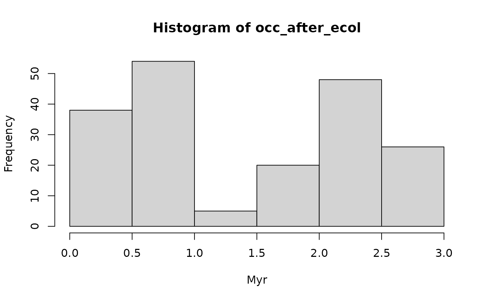

Defines a niche model where the gradient based on discrete bins (given by binS)
Value
a function describing the niche for usage with apply_niche. The function takes (vectors of ) values from bin as input and returns recovery probability for this bin.
See also
discrete_gradient()to construct gradients based on discrete categories.snd_niche()to define niches along a continuous gradient based on a scaled normal distributionbounded_niche()to define niches along a continuous gradient based on hard boundariesapply_niche()for the function used to apply niches to time series or eventsvignette("advanced_functionality")for details on how to create user-defined niche models
Examples
# example workflow of how to construct discrete niches. For details on
#how this can be used in conjunction with apply_niche, see documentation
#therein of the vignette on event data
# we model a simple niche, separated into "shallow water" and "deep water"
bins = c("shallow water", "deep water")
# taxon is more abundant in shallow water
rec_prob = c(0.9, 0.1)
# 90 % recovery probability in shallow water, 10 % in deep water
niche = discrete_niche(bins = bins, rec_prob = rec_prob)
# lets assume for the first 1 Myr, water is shallow, followed by 0.8 Myr of deep water,
# and then 1 Myr of shallow water again
# define discretized gradient using discrete_gradient
gradient = discrete_gradient(vals = c("shallow water", "deep water", "shallow water"),
bounds = c(0,1,1.8,2.8))
# assuming constant fossil abundance before ecological effects, how many fossils do we recover?
foss_occ = p3(rate = 100, from = 0, to = 2.8)
occ_after_ecol = apply_niche(foss_occ, niche_def = niche, gc = gradient)
hist(occ_after_ecol, xlab = "Myr")

# Between 1 nad 1.8 Myr fossil abundance is reduced because this coincides with deep whater
# in which the recovery potential of the taxon is reduced (from 90 % to 10 %)